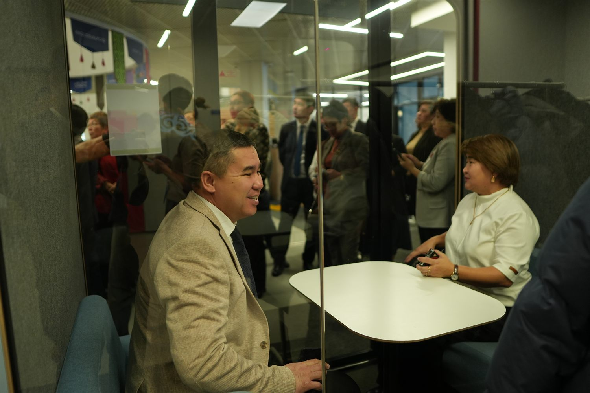
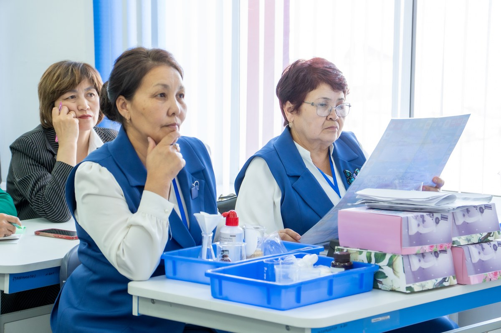
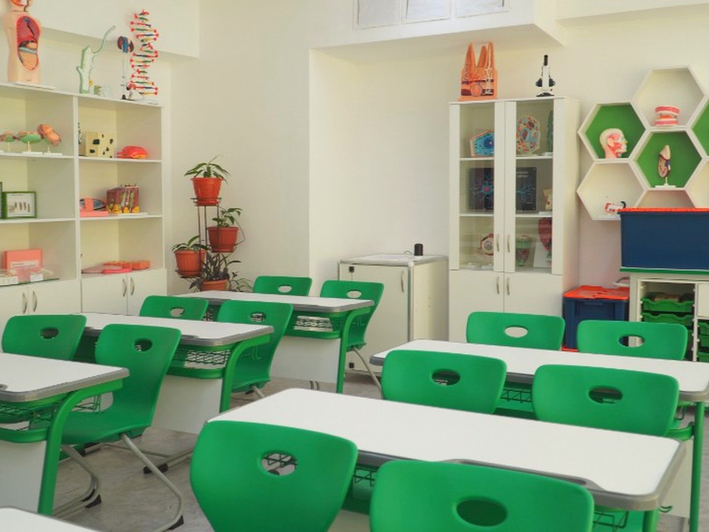

Жабдықтау үш бағыттан тұрадыThe fit-out spans three directions





Сынып жиһазыClassroom furniture
Сабақ уақытында баланың қозғалысы еркін, отырысы ыңғайлы болуы керек. Біз ұсынатын заманауи жиһаз эргономикалық стандарттарға сай жасалған. Ол оқушының денсаулығын сақтап, зейінін тек сабаққа аударуға көмектеседі.During lessons, children need freedom to move and comfortable seating. Our modern furniture meets ergonomic standards — protecting students' health and helping them focus entirely on learning.
ЗертханаларScience labs
Теорияны практикаға айналдырамыз. Жаратылыстану кабинеттерін заманауи зертханалық құралдармен жабдықтаймыз. Оқушылар құрғақ формула жаттамай, ғылыми тәжірибелерді өз қолдарымен жасап көреді.We turn theory into practice. We equip science classrooms with modern laboratory tools so students experience experiments hands-on — not just memorising dry formulas.
Цифрлық жабдықDigital equipment
Бормен жазатын тақталардың уақыты өтті. Интерактивті панельдер, ноутбуктер және STEM жинақтары арқылы мектепте толыққанды цифрлық экожүйе құрамыз. Бұл мұғалімге сабақты қызықты өткізуге, ал оқушыға ақпаратты тез меңгеруге мүмкіндік береді.The era of chalkboards is over. Through interactive panels, laptops and STEM kits, we build a complete digital ecosystem in schools — giving teachers engaging lessons and students faster ways to grasp information.